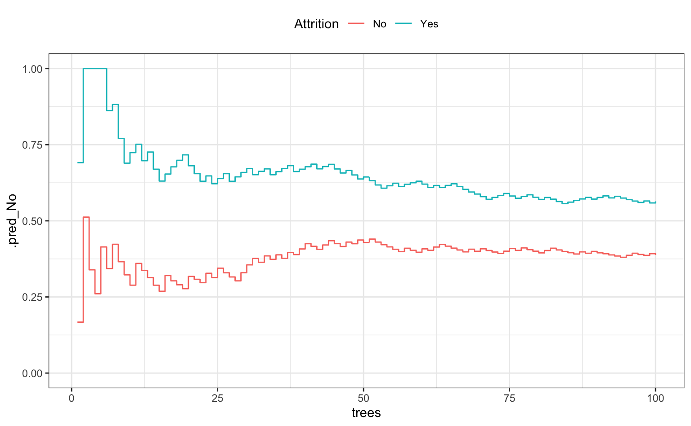
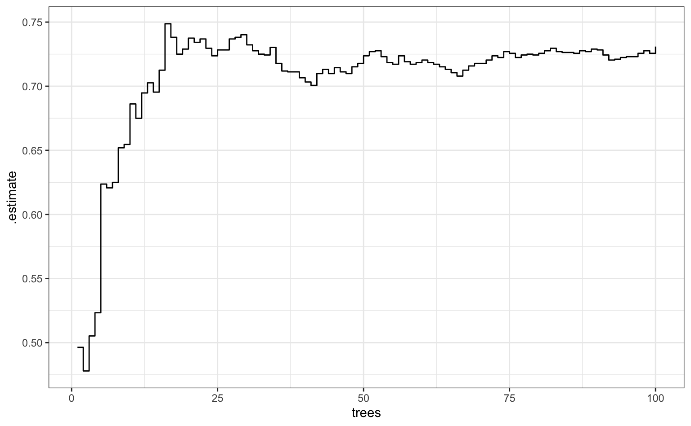

Submodels.RmdSome R packages can create predictions from models that are different than the one that was fit. For example, if a boosted tree is fit with 10 iterations of boosting, the model can usually make predictions on submodels that have less than 10 trees (all other parameters being static). This is helpful for model tuning since you can cheap evaluate tuning parameter combinations and can often results in a large speed-up in the computations.
In parsnip, there is a method called multi_predict() that can do this. It’s current methods are:
## [1] multi_predict._C5.0* multi_predict._earth*
## [3] multi_predict._elnet* multi_predict._lognet*
## [5] multi_predict._multnet* multi_predict._train.kknn*
## [7] multi_predict._xgb.Booster* multi_predict.default*
## see '?methods' for accessing help and source codeWe’ll use the attrition data in rsample to illustrate:
## ── Attaching packages ────────────────────────────────── tidymodels 0.0.2 ──## ✔ broom 0.5.2 ✔ recipes 0.1.6.9000
## ✔ dials 0.0.2.9000 ✔ rsample 0.0.5
## ✔ dplyr 0.8.3 ✔ tibble 2.1.3
## ✔ infer 0.4.0.1 ✔ yardstick 0.0.3
## ✔ purrr 0.3.2## ── Conflicts ───────────────────────────────────── tidymodels_conflicts() ──
## ✖ purrr::discard() masks scales::discard()
## ✖ dplyr::filter() masks stats::filter()
## ✖ dplyr::lag() masks stats::lag()
## ✖ dials::margin() masks ggplot2::margin()
## ✖ dials::offset() masks stats::offset()
## ✖ recipes::step() masks stats::step()data(attrition)
set.seed(4595)
data_split <- initial_split(attrition, strata = "Attrition")
attrition_train <- training(data_split)
attrition_test <- testing(data_split)A boosted classification tree is one of the most low-maintenance approaches that we could take to these data:
# requires the xgboost package
attrition_boost <-
boost_tree(mode = "classification", trees = 100) %>%
set_engine("C5.0")Suppose that 10-fold cross-validation was being used to tune the model over the number of trees:
The process would fit a model on 90% of the data and predict on the remaining 10%. Using rsample:
model_data <- analysis(folds$splits[[1]])
pred_data <- assessment(folds$splits[[1]])
fold_1_model <-
attrition_boost %>%
fit_xy(x = model_data %>% dplyr::select(-Attrition), y = model_data$Attrition)For multi_predict(), the same semantics of predict() are used but, for this model, there is an extra argument called trees. Candidate submodel values can be passed in with trees:
fold_1_pred <-
multi_predict(
fold_1_model,
new_data = pred_data %>% dplyr::select(-Attrition),
trees = 1:100,
type = "prob"
)
fold_1_pred## # A tibble: 111 x 1
## .pred
## <list>
## 1 <tibble [100 × 3]>
## 2 <tibble [100 × 3]>
## 3 <tibble [100 × 3]>
## 4 <tibble [100 × 3]>
## 5 <tibble [100 × 3]>
## 6 <tibble [100 × 3]>
## 7 <tibble [100 × 3]>
## 8 <tibble [100 × 3]>
## 9 <tibble [100 × 3]>
## 10 <tibble [100 × 3]>
## # … with 101 more rowsThe results is a tibble that has as many rows as the data being predicted (n = 111). The .pred column contains a list of tibbles and each has the predictions across the different number of trees:
## # A tibble: 100 x 3
## trees .pred_No .pred_Yes
## <int> <dbl> <dbl>
## 1 1 0.691 0.309
## 2 2 1 0
## 3 3 1 0
## 4 4 1 0
## 5 5 1 0
## 6 6 0.862 0.138
## 7 7 0.882 0.118
## 8 8 0.770 0.230
## 9 9 0.689 0.311
## 10 10 0.724 0.276
## # … with 90 more rowsTo get this into a format that is more usable, we can use tidyr::unnest() but we first add row numbers so that we can track the predictions by test sample as well as the actual classes:
fold_1_df <-
fold_1_pred %>%
bind_cols(pred_data %>% dplyr::select(Attrition)) %>%
add_rowindex() %>%
unnest(.pred)
fold_1_df## # A tibble: 11,100 x 5
## Attrition .row trees .pred_No .pred_Yes
## <fct> <int> <int> <dbl> <dbl>
## 1 Yes 1 1 0.691 0.309
## 2 Yes 1 2 1 0
## 3 Yes 1 3 1 0
## 4 Yes 1 4 1 0
## 5 Yes 1 5 1 0
## 6 Yes 1 6 0.862 0.138
## 7 Yes 1 7 0.882 0.118
## 8 Yes 1 8 0.770 0.230
## 9 Yes 1 9 0.689 0.311
## 10 Yes 1 10 0.724 0.276
## # … with 11,090 more rowsFor two samples, what do these look like over trees?
fold_1_df %>%
dplyr::filter(.row %in% c(1, 88)) %>%
ggplot(aes(x = trees, y = .pred_No, col = Attrition, group = .row)) +
geom_step() +
ylim(0:1) +
theme(legend.position = "top")
What does performance look like over trees (using the area under the ROC curve)?
fold_1_df %>%
group_by(trees) %>%
roc_auc(truth = Attrition, .pred_No) %>%
ggplot(aes(x = trees, y = .estimate)) +
geom_step()